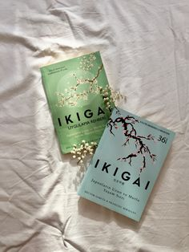

Title: Ikigai: The Japanese Secret to a Long and Happy Life
Authors: Hector Garcia and Francesc Miralles
Genre: Self-help
Published: 2016
"Ikigai: The Japanese Secret to a Long and Happy Life" by Hector Garcia and Francesc Miralles explores the Japanese concept of ikigai, which translates to "a reason for being." This book is a journey into the philosophies and practices that lead to a fulfilling and purposeful life, particularly those from the Okinawa region, which is known for its high life expectancy and number of centenarians.
Garcia and Miralles blend practical advice with captivating stories of the Okinawan people, shedding light on how they cultivate community, stay active, and maintain a strong sense of purpose. The authors outline the four pillars of ikigai: doing what you love, doing what you are good at, doing what the world needs, and doing what you can be paid for. These pillars form a framework for readers to find their own ikigai, offering a balanced approach to life that integrates passion, mission, vocation, and profession.
One of the strengths of "Ikigai" is its accessibility. The writing is clear and engaging, making complex concepts easy to understand. The book is filled with inspiring anecdotes and practical tips that can be applied to everyday life, encouraging readers to reflect on their own routines and goals. The emphasis on small, sustainable changes is particularly compelling, as it makes the pursuit of ikigai feel achievable.
The book also delves into the science behind longevity and happiness, providing evidence-based insights into the benefits of an active lifestyle, a healthy diet, and strong social connections. The authors argue that these factors, combined with a sense of purpose, are key to living a long and happy life. They draw on interviews with Okinawan centenarians, who share their wisdom and experiences, adding a personal and authentic touch to the narrative.
However, while the book offers valuable insights and practical advice, some readers may find the content to be somewhat repetitive. The core message of ikigai is reiterated throughout the book, which, while reinforcing its importance, can feel redundant at times. Additionally, those looking for a more in-depth exploration of Japanese culture may find the book to be somewhat superficial, as it primarily focuses on the concept of ikigai rather than providing a broader cultural context.
Overall, "Ikigai: The Japanese Secret to a Long and Happy Life" is a thought-provoking and inspiring read that encourages readers to find their own path to fulfillment. Its blend of practical advice, scientific research, and personal stories makes it a valuable resource for anyone seeking to improve their quality of life. Whether you are looking to make small changes to your daily habits or seeking a deeper sense of purpose, this book offers a compelling guide to living a more meaningful and joyful life.
Rating: ★★★★☆ (4/5)
